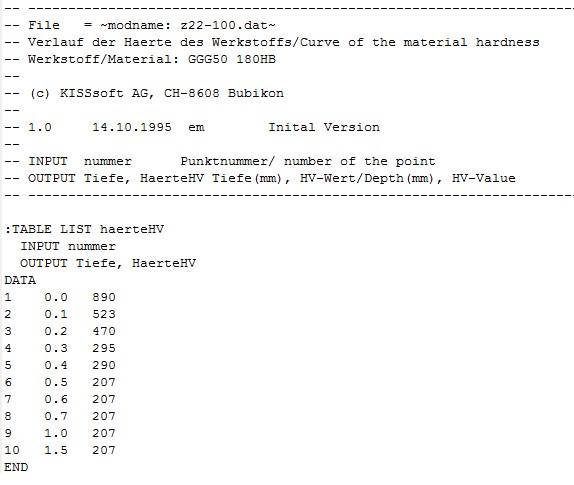
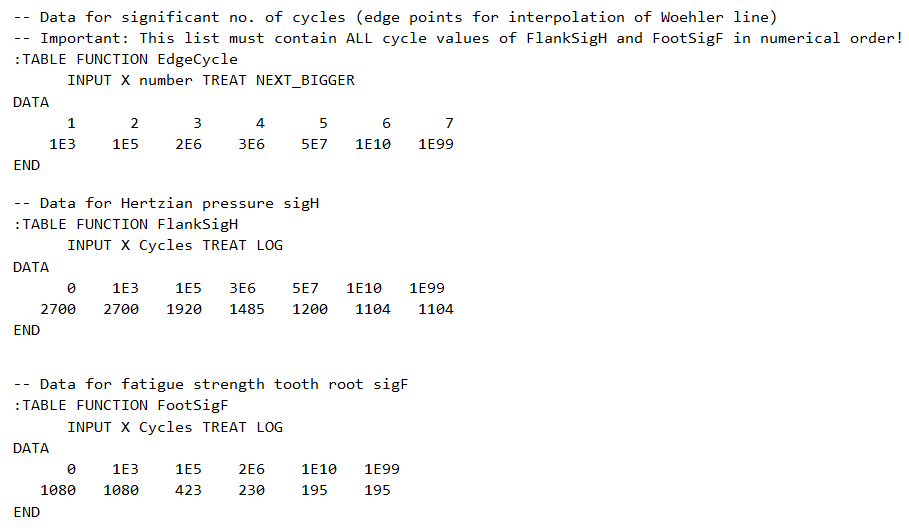

|
|
|


齿轮材料
- 注释： 供用户自行使用的文本字段。
- 硬度曲线文件：数据库条目引用外部表（参见“外部表”一章）。硬度曲线表的文件名以 Z22-???.dat 开头。材料实测硬度值将在模块 Z22 中以图形方式显示，但不参与计算。下面举例说明如何在外部表中创建这种硬度曲线。

图 9.5：硬度曲线定义示例 (Z22-100.dat)
- Wöhler 图线文件：数据库条目引用外部表（参见「外部表」章节）。S-N 曲线（Wöhler 曲线）的表以 .dat 开头。对于塑料材料，
必须在此处输入文件名。该文件包含计算中使用的材料数据（Wöhler 曲线、杨氏模量等）。对于金属材料，
也可以在此处输入文件名。该文件包含计算中使用的弯曲强度和赫兹接触压力的 S-N 曲线（Wöhler 曲线）。如果设置了「」标志，则这些曲线将用于计算。

图 9.6：金属材料应力-寿命曲线（S-N 曲线，Woehler 曲线）文件示例
- 齿根疲劳极限 (ISO, DIN/ AGMA 2101) σFlim/sat, 齿面疲劳极限 (ISO, DIN AGMA 2101) σHlim/sac: [N/mm2] 齿根/齿面疲劳极限值在 DIN 3990 或 ISO 6336 Part 5 中规定。
- 齿根疲劳极限 (AGMA 2001) sat, 齿面疲劳极限 sac (AGMA 2001): [lbf/in2] 基于 AGMA 2001 的强度计算。
- 齿根/齿面平均粗糙度高度 RzF/ RzH: [μm]
- 热接触系数 BM: [N/mm/s0.5/K] 该系数用于计算闪温系数。可在 DIN 3990，第 4 部分，公式 3.11、4.17、4.18 和 4.19 中找到更多信息。对于最常用的材料，其值为 13.795。
English Original
Material of gears
- Comment: Text field for your own use.
- File for hardness curve: The database entries refer to external tables (see chapter External tables). Tables for the hardness curve begin with Z22-???.dat. The material's measured hardness value, to be displayed as a graphic in module Z22. Does not influence the calculation. Here is an example of how to create this type of hardness curve in an external table.
Figure 9.5: Example of a hardness curve definition (Z22-100.dat)
- Woehler line file: The database entries refer to external tables (see chapter External tables). Tables for S-N curves (Woehler lines) begin with .dat.
You must input a file name for plastics here. The file contains the material data (Woehler lines, Young's modulus, etc.) used in the calculation.
For metallic materials you can also input a file name here. The file contains the S-N curves (Woehler lines) for bending strength and for Hertzian pressure that are used in the calculation, if the flag is set.
Figure 9.6: Example of a file with S-N curves (Woehler lines) for a metallic material
- Endurance limit root (ISO, DIN/ AGMA 2101) σFlim/sat, Endurance limit flank (ISO, DIN AGMA 2101) σHlim/sac: [N/mm2] Endurance limit values specified in DIN 3990 or ISO 6336 Part 5.
- Endurance limit root (AGMA 2001) sat, Endurance limit flank sac (AGMA 2001): [lbf/in2] Strength calculation based on AGMA 2001.
- Average roughness height root/flank RzF/ RzH: [μm]
- Thermal contact coefficient BM: [N/mm/s0.5/K] This coefficient is needed to calculate the flash factor. You will find more information about this in DIN 3990, Part 4, Equations 3.11, 4.17, 4.18 and 4.19. For the most commonly used materials, it is 13.795.